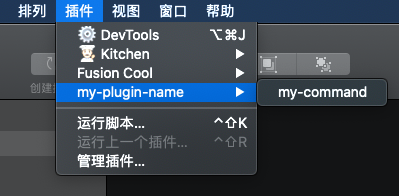
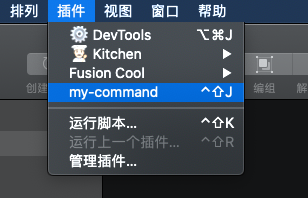
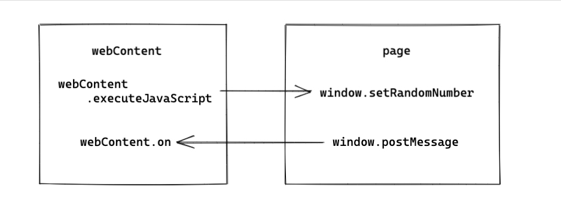

Sketch 插件可以通过 JS API 和 OC 来实现，OC 比较深入 Sketch 的内部用法，但是当发布新版 Sketch 时会对 API 有较大的修改，且官网比较推荐使用 JS API，所以本文也就主要介绍 JS API 写插件的方法。
Sketch 插件提供使用 webview 的方式来丰富页面元素和交互形式，所以可以使用 webview 的形式来编写插件。
生成插件
可以使用 skpm 来创建一个 Sketch 插件：
1
2
|
npm install -g skpm
skpm create my-plugin-name --template=skpm/with-webview
|
skpm create <project-name> --template=<username>/<repository> 是以 <username>/<repository> 为模板来创建这个插件（意思是也可以指定 github 上面别人写的开源模板！）。所以现在是以 sketch-module-web-view 为模板创建。
创建完文件结构大致是：
1
2
3
4
5
6
7
8
9
10
11
12
13
14
|
- assets // 静态资源
- icon.png
- resources // webview内嵌页面
- style.css
- webview.html
- webview.js
- my-plugin-name.sketchplugin // build 出的 sketch 插件
- Resources
- Sketch
- src // 具体文件
- manifest.json
- my-command.js
- package.json
- webpack.skpm.config.js
|
编写插件
当这个时候双击 .sketchplugin 文件时，会看到目前的插件是这样的：

目录项配置
manifest.json 文件是插件的配置入口，默认内容如下：
1
2
3
4
5
6
7
8
9
10
11
12
13
14
15
16
17
18
19
20
21
22
23
24
25
26
|
{
"compatibleVersion": 3, // 定义 sketch 需要运行该插件的最低版本，例如 "compatibleVersion": 52.1
"bundleVersion": 1,
// commands 是一个对象数组，包含所有需要的 command
"commands": [
{
"name": "my-command", // command 对应的名字
"identifier": "my-plugin-name.my-command-identifier", // command 对应的唯一标识
"script": "./my-command.js", // command 对应的 script 文件
// "shortcut": "ctrl shift j", // command 对应的快捷键
// command 对应的具体 action
"handlers": {
"run": "onRun",
"actions": {
"Shutdown": "onShutdown"
}
}
}
],
// 定义插件的操作目录布局
"menu": {
// "isRoot": true, // 插件默认会有一个子目录，如果不需要子目录就可以在根目录上设置 isRoot: true
"title": "my-plugin-name", // 当 isRoot 设置为 true，会被忽略
"items": ["my-plugin-name.my-command-identifier"]
}
}
|
当给插件配置完 isRoot 和快捷键之后，会发现插件变成如下：

这只是针对单个目录的简单插件，如果插件命令较多，并且需要子目录，则需要在 commands 数组中增加相应的配置，同时将 identifier 加到 menu 项的 items 中即可。更多 manifest 配置可见官网文档。
actions
action 是由于用户交互在应用程序中发生的事件，例如OpenDocument、CloseDocument等，当触发这些 action 时，就可以运行插件中的某些代码。
例如：
1
2
3
4
5
6
7
8
9
10
|
// manifest.json
"commands": [{
"script" : "my-action-listener.js",
"name" : "My Action Listener",
"handlers": {
"actions": {
"OpenDocument": "onOpenDocument"
}
},
}]
|
1
2
3
4
|
// my-action-listener.js
export function onOpenDocument(context) {
context.actionContext.document.showMessage("Document Opened");
}
|
具体的 action 会触发的方法需要在顶层 export 出去。
这里的 context 是关于当前 action 所涉及到的一些信息，信息放在 context.actionContext 对象中（并不是所有 action 都具备一个actionContext属性，需要的话可以给官网提 issue）。比如当选择图层时，actionContext 就是选中的图层，例如selectionChanged。
有很多 action 是有 begin/finish 两个的，例如 selectionChanged，就有 SelectionChanged.begin 和 SelectionChanged.finish两个。如果不具体标识出来是 begin 还是 finish 而直接写 selectionChanged 就会触发两次。
更多 action 可以见文档。
webview
当使用 skpm create my-plugin-name --template=skpm/with-webview 创建插件时，我们会看到 my-command.js 中存在一个 webview 示例：
1
2
3
4
5
6
7
8
9
10
11
12
13
14
15
16
17
18
19
20
21
|
import BrowserWindow from "sketch-module-web-view";
const webviewIdentifier = "my-plugin-name.webview"; // 一个独特标识
export default function () {
const options = {
identifier: webviewIdentifier,
width: 240,
height: 180,
show: false,
};
const browserWindow = new BrowserWindow(options); // 创建一个 webview
browserWindow.once("ready-to-show", () => {
// webview 的事件和方法具体可见： https://github.com/skpm/sketch-module-web-view/blob/master/docs/browser-window.md
browserWindow.show();
});
browserWindow.loadURL(require("../resources/webview.html")); // 加载本地的 html，也可以加载远程的 html，就可以使用服务器上现成的页面~
}
|
然后可以通过 const webContents = browserWindow.webContents 获取到 wenContent，与页面进行通信：
1
2
3
4
5
6
7
8
9
10
11
12
13
14
15
16
17
18
19
20
21
22
23
24
25
26
27
28
29
30
|
// my-command.js
import UI from "sketch/ui";
// ...
const webContents = browserWindow.webContents;
// webContent 的事件具体可见：https://github.com/skpm/sketch-module-web-view/blob/master/docs/web-contents.md
webContents.on("did-finish-load", () => {
UI.message("UI loaded!");
});
// 通信，监听页面上触发的 `nativeLog`，随后执行页面上的 `setRandomNumber` 方法
webContents.on("nativeLog", (s) => {
UI.message(s);
webContents
.executeJavaScript(`setRandomNumber(${Math.random()})`)
.catch(console.error);
});
...
// 页面上的方法，webview.js
// 使用 `window.postMessage` 触发 `nativeLog`
document.getElementById("button").addEventListener("click", () => {
window.postMessage("nativeLog", "Called from the webview");
});
// 暴露出去的 `setRandomNumber` 方法
window.setRandomNumber = (randomNumber) => {
document.getElementById("answer").innerHTML =
"Random number from the plugin: " + randomNumber;
};
|
大致通信方式如下图：

更多的关于通信的细节可见文档。
发布插件
其实最简单的插件发布方式就是修改当前 version 打包个 .zip，如果是在 github 上的话可以直接使用 skpm 内置的构建命令以及发布。
1
|
"postinstall": "npm run build && skpm-link"
|
如果需要自己定义如何发布的话，就可以在 manifest.json 中添加一个 "appcast" 字段，这个字段的值是一个 xml 链接，例如 kitchen 的 appcast.xml
1
|
"appcast": "https://kitchen.alipay.com/appcast.xml",
|
打开之后会发现是一个个 <item> 的集合：
1
2
3
|
<item>
<enclosure url="https://gw.alipayobjects.com/os/kitchen/e80d9df7-d0cc-4420-8738-7ed0de147b55/kitchen-2.3.1.zip" sparkle:version="2.3.1"/>
</item>
|
可以看出每个 item 下面都有每个版本的具体包的地址，当给 xml 添加完新版本的 item 后，Sketch 会根据 xml 链接获取是否有新的版本，随后就会显示有新的版本需要更新。
这里需要注意，xml 链接需要是 https 协议！更多关于如何发布插件可见文档。
一些额外配置
- 崩溃保护：当 Sketch 运行发生崩溃，它会启用安全模式而停用所有插件。意味着当因为 bug 导致 Sketch 崩溃后，需要重启 Sketch 后重新启用插件，此时可以禁用安全模式来避免这一操作。
1
|
defaults write com.bohemiancoding.sketch3 disableAutomaticSafeMode YES
|
- 插件缓存：默认 Sketch 会缓存插件，意味着本地用
npm run watch 对插件进行修改之后即便插件重新 build 了 Sketch 也不会重新加载该插件（就需要重启 Sketch），此时可以配置禁用缓存机制。
1
|
defaults write com.bohemiancoding.sketch3 AlwaysReloadScript -bool YES
|
- 插件 WebView 调试：可通过以下配置开启 webview 调试功能。
1
|
defaults write com.bohemiancoding.sketch3 WebKitDeveloperExtras -bool YES
|